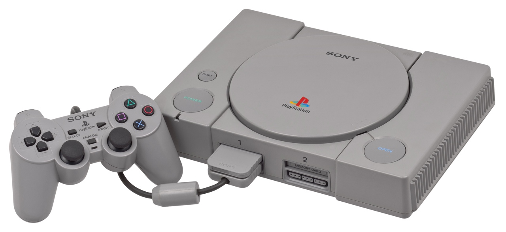
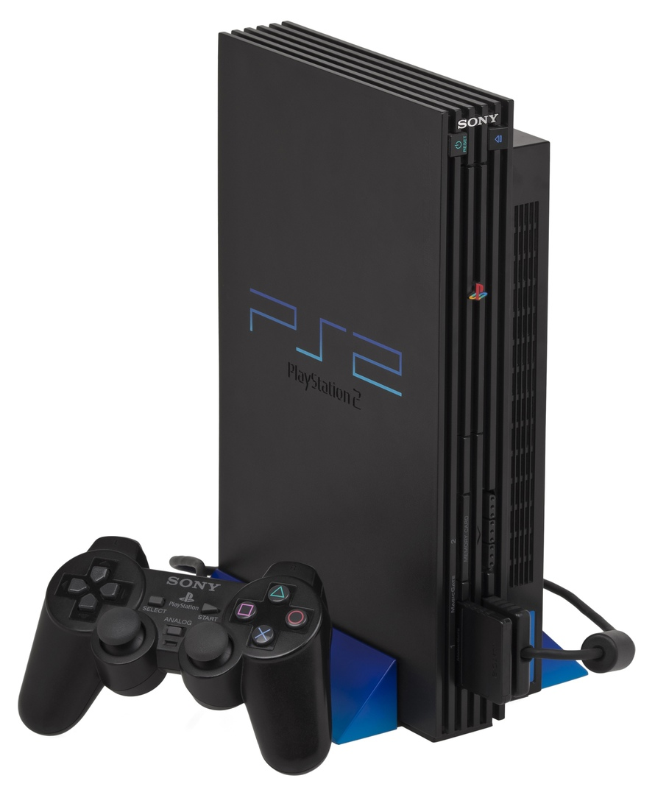
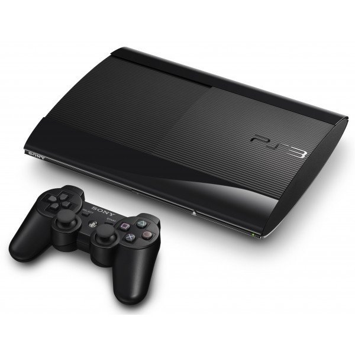
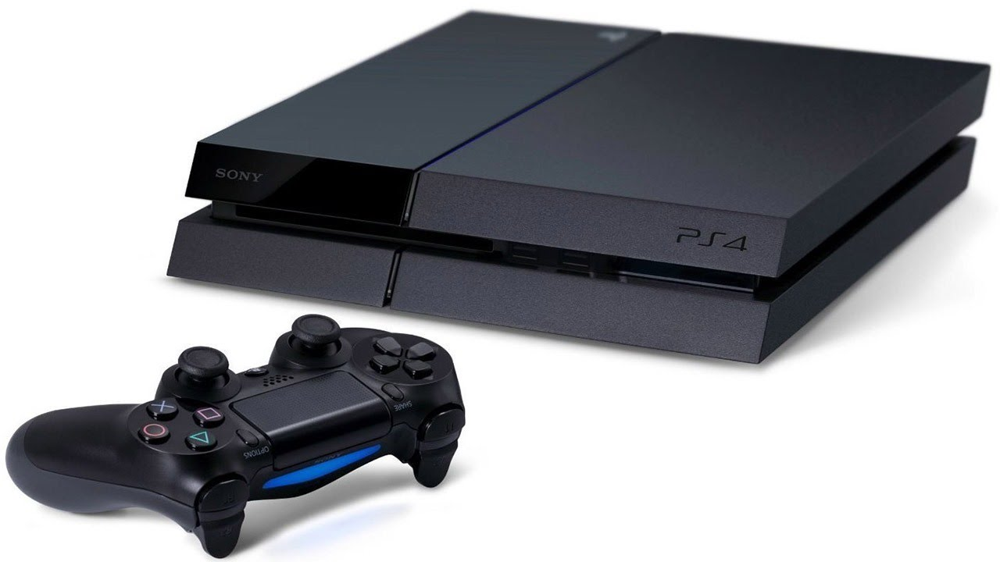
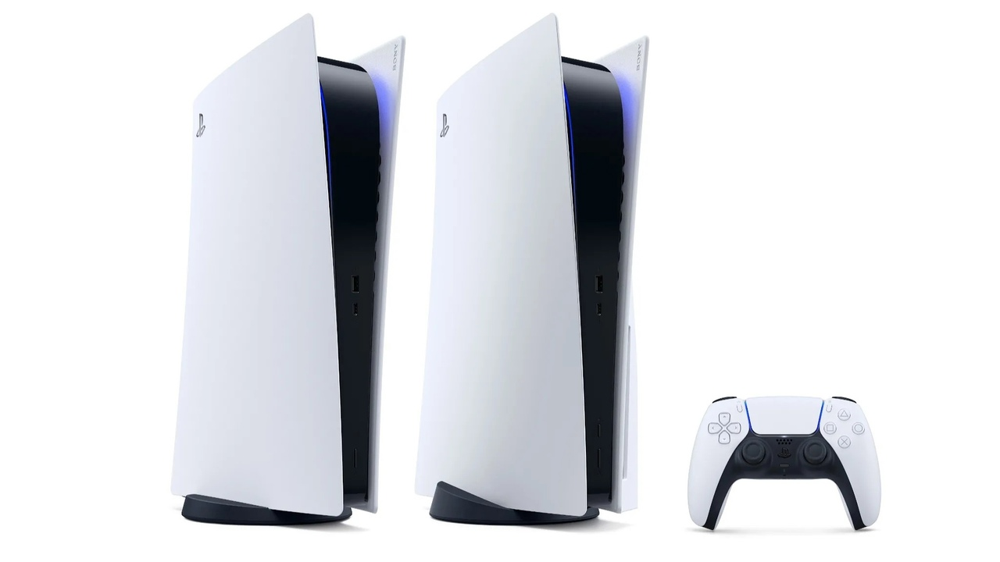

1th generation

Оригинальная PlayStation или PlayStation 1 была выпущена 3 декабря 1994 года в Японии, в США приставка появилась 9 сентября 1995 года. Она стала частью пятого поколения игровых систем. Впоследствии консоль вышла в специальной чёрной окраске под названием Net Yaroze. В 1999 году Sony выпустила PocketStation — периферийное устройство для оригинальной PlayStation.
7 июля 2000 года была выпущена PS one, которая являлась уменьшенной версией PlayStation. Из-за своей доступности PS One превосходил по продажам все остальные консоли на рынке в течение некоторого времени. К марту 2007 года года продажи PS one в общей сложности составили более 28 миллионов устройств.
2th generation

PlayStation 2 была выпущена в 2000 году. Является частью шестого поколения игровых систем и обладает обратной совместимостью с большинством игр первой PlayStation. Эта консоль стала самой продаваемой стационарной консолью в мире[4], разойдясь тиражом в более чем 155 миллионов устройств по состоянию на 2012 год[3]. 29 ноября 2005 года PS2 стала самой быстрой игровой консолью, достигшей результата в 100 миллионов проданных штук. Этот результат был достигнут за 5 лет и 9 месяцев с момента запуска продаж, что позволило PS2 обойти своего предшественника PS1, которому для достижения данного результата понадобилось 9 лет и 6 месяцев[2]. Производство данной консоли в Японии было прекращено 28 декабря 2012 года, а 4 января 2013 года Sony подтвердила, что производство PlayStation 2 прекращено по всему миру[23]. Тем самым, PS2 выпускалась почти 13 лет, это один из самых длинных жизненных циклов в истории игровой индустрии.
Через четыре года после выпуска PlayStation 2 компания Sony выпустила улучшенную версию этой консоли — PlayStation 2 Slimline. По сравнению со своим предшественником Slimline был меньше, тоньше, тише, а также имел встроенный порт Ethernet. В 2007 году данная консоль была обновлена[24]. В 2008 году Sony выпустила ещё одну ревизию Slimline, в которой блок питания был перемещён в корпус самой приставки[25].
3th generation

Осенью 2006 года в Японии были начаты продажи консоли седьмого поколения под названием PlayStation 3. С самого момента выпуска приставкой поддерживается большинство игр консолей предыдущих поколений[26]. PS3 стала первой консолью в серии, которая представила технологию отслеживания положения контроллера в пространстве. Помимо этого PlayStation 3 может проигрывать диски формата Blu-ray Disc. Изначально PS3 поставлялся с объёмом жёсткого диска в 20 или 60 гигабайт, однако впоследствии размер памяти консоли увеличили до 500 гигабайт. На ноябрь 2013 года было продано более 80 миллионов консолей PlayStation 3 по всему миру[27].
В 2009 году PlayStation 3 была переиздана под названием PlayStation 3 Slim. Она стала компактнее, тише, легче, а также потребляет меньше энергии, чем предыдущие модели[28][29]. Кроме того, консоль оснащена переработанной системой охлаждения и новой микропроцессорной архитектурой Cell[30]. Менее чем за месяц после начала продаж было продано более миллиона приставок PS3[31]. PlayStation 3 Slim также имеет порт HDMI. В 2012 году вышла ещё одна обновлённая версия консоли под названием PlayStation 3 Super Slim. Она стала меньше и легче предыдущей версии. Оснащается жёстким диском объёмом в 500 гигабайт[32].
4th generation

Официальный анонс PlayStation 4 состоялся на конференции PlayStation Meeting в феврале 2013 года, продажи начались в ноябре этого же года в США, Европе, Южной Америке, России и Австралии, в феврале 2014 года — в Японии[33].
В отличие от своей предшественницы PlayStation 3, основанной на микропроцессорной архитектуре Cell, приставка использует гибридный процессор компании AMD на основе x86-64 пиковой производительностью 1,84 терафлопс. Входящий в комплект игровой контроллер DualShock 4 примечателен наличием встроенного тачпада. Консоль работает под управлением операционной системы Orbis, являющейся модифицированной версией FreeBSD 9.0[34]. Приставка позиционируется компанией именно как игровое устройство, а не как домашний медиацентр[35]. На конец 2018 года по всему миру было продано более 91 миллиона консолей PlayStation 4 и 876 миллионов игр для них[36].
Осенью 2016 года Sony выпустила две новые аппаратные версии приставки: PlayStation 4 Slim, обладающую уменьшенными габаритами, и PlayStation 4 Pro, оснащённую более мощными основным и графическим процессором с расчётом на возможность вывода изображения и потокового видео в разрешении 4K.
5th generation

PlayStation 5 должна стать новой игровой консолью в серии PlayStation и преемницей PlayStation 4[37][38]. На CES 2020 Sony представила официальный логотип новой консоли[39].
Консоль будет использовать модифицированный 8-ядерный/16-поточный процессор на основе микроархитектуры AMD Zen 2[40]. В качестве графики будет использован модифицированный чип AMD Navi построенный на микроархитектуре RDNA 2(второго поколения). И центральный, и графический процессоры созданы на новом тех. процессе 7 нм. Также PS5 будет комплектоваться SSD-накопителем повышенной пропускной способности[41].
Контроллер PlayStation 5 получил новое название — DualSense. Журналист Wired Питер Рубин отметил, что геймпад немного тяжелее своих предшественников, и что в нём есть небольшое отверстие, вероятно, для микрофона, а также разъём USB Type-C для зарядки. Другой характерной особенностью контроллера являются «адаптивное нажатие» курков — кнопок L2 и R2 на задней стороне геймпада: у разработчиков игр должна быть возможность программно регулировать сопротивление этих кнопок при нажатии.[37][42]. Помимо этого он будет иметь более сильную тактильную отдачу в зависимости от ситуации игрового процесса, нежели DualShock 4[37].